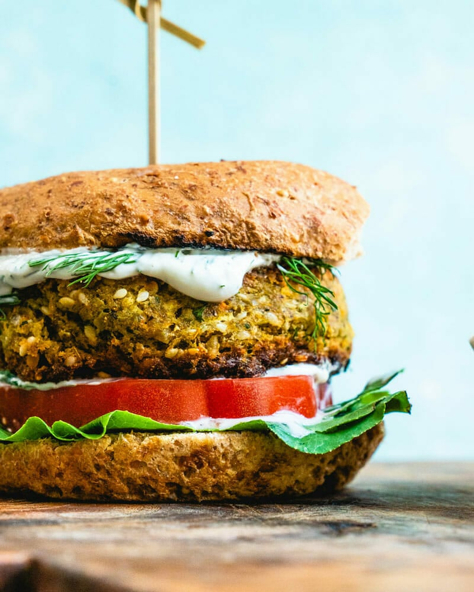

Ingredientes
- 1 taza de lentejas
- Cebolla
- Chile
- Culantro
- Canela
- Jenjibre en polvo
- Paprika
- 1 cucharadita de polvo de hornear
- Sal
- 4 tazas de harina
- 1 taza de leche tibia
- 1 cucharada de levadura
- 3 cucharadas de mantequilla derretida
- 3 cucharadas de azúcar
- 1 Huevo
- Ajonjolí
- Jamón
- Queso
- Lechuga
- Tomate
- Salsa chipotle (opcional)
Preparación
- Colocar las lentejas en un tazón con agua y dejar reposar toda la noche.
- Escurrir las lentejas y colocarlas en un procesador con cebolla, chile y culantro.
- Agregar agua de ser necesario para procesar bien los ingredientes.
- Agregar la canela, la paprika, el jengibre, el polvo de hornear y la sal. Agregar harina para compactar la mezcla y poder formar las tortas.
- Cocinar las tortas con aceite hasta que esten doradas.
- Mezclar la leche, la mantequilla, el azúcar y la levadura. Dejar reposar.
- Agregar la harina, el huevo y la sal. Mezclar hasta formar la masa. Dejar reposar.
- Formar los bollos, ponerles huevo encima con una brocha y colocar ajonjolí encima.
- Engrasar una bandeja y colocar los bollos. Hornear hasta que esten dorados.
- Cocinar el jamón y caramelizar las cebollas con azúcar.
- Colocar mantequilla en una mitad del pan, una torta, jamón, queso, salsa chipotle, lechuga y tomate. Cerrar con la otra mitad del pan.